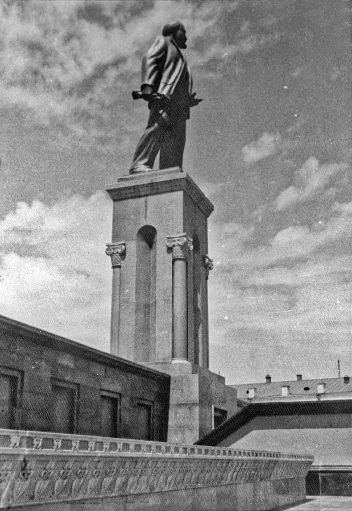
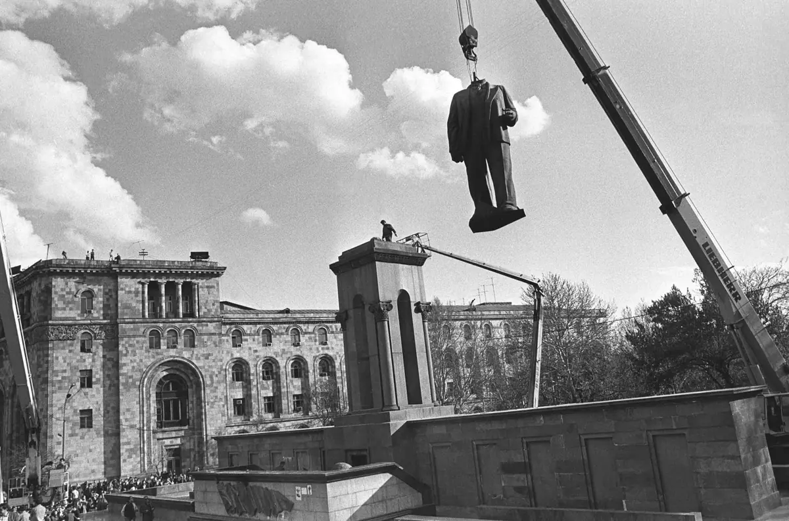
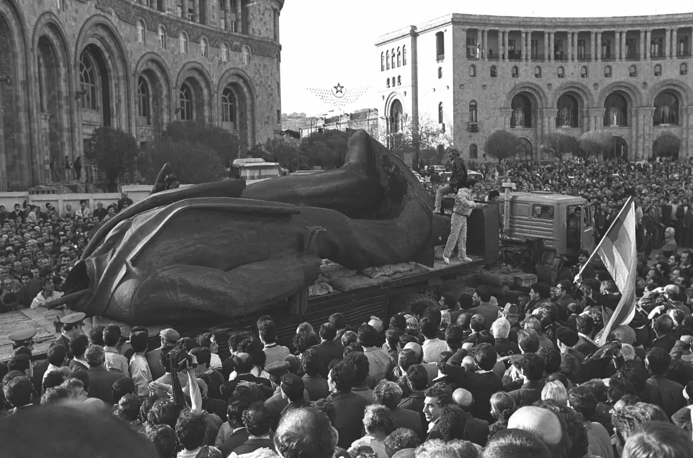

հինգ գլուխпять главfive chapters
Հրապարակի և հուշարձանի պատմությունըИстория площади и памятникаThe Square and the Monument
Ինչպես Երևանի գլխավոր հրապարակում հայտնվեց Լենինի հուշարձանը և ինչ մնաց դրանից։Как на главной площади Еревана появился памятник Ленину и что от него осталось.How a Lenin monument came to stand on Yerevan's main square — and what is left of it.
01
Նախապես թողնված տեղըМесто, оставленное заранееA place set aside in advance
Երևանի գլխավոր հրապարակը նախագծել է ճարտարապետ Ալեքսանդր Թամանյանը՝ քաղաքի 1924 թվականի գլխավոր հատակագծում։ Շինարարությունն սկսվել է 1926 թվականին՝ Կառավարության շենքից։ Լենինի արձանի համար Թամանյանը տեղ էր հատկացրել հրապարակի հարավային կողմում, որտեղ հրապարակը միանում է բուլվարին։ 1920-ական թվականների վերջին այնտեղ դրվել էր փոքր օբելիսկ՝ գրությամբ, որ այստեղ հուշարձան է կանգնեցվելու։
Главную площадь Еревана спроектировал архитектор Александр Таманян в генеральном плане города 1924 года. Строить её начали в 1926 году — с Дома правительства. Место для памятника Ленину Таманян отвёл на южной стороне, там, где площадь переходит в бульвар. В конце 1920-х годов там поставили небольшой обелиск с надписью о том, что здесь будет установлен памятник.
Yerevan's main square was designed by the architect Alexander Tamanian as part of the city's 1924 general plan. Construction began in 1926, starting with the Government House. Tamanian set aside a spot for a Lenin monument on the south side, where the square meets the boulevard. In the late 1920s a small obelisk was placed there, with an inscription saying that a monument would stand on this spot.
02
Մրցույթն ու բացումըКонкурс и открытиеCompetition and unveiling

1938 թվականին հայտարարվեց հուշարձանի նախագծի համամիութենական մրցույթ։ Արձանը հանձնարարվեց քանդակագործ Սերգեյ Մերկուրովին, պատվանդանը՝ ճարտարապետներ Նատալյա Պարեմուզովային և Լևոն Վարդանովին։ Արձանը պատրաստվեց կռածո պղնձից, պատվանդանը՝ գրանիտից։ Հուշարձանը բացվեց 1940 թվականի նոյեմբերի 24-ին՝ Հայաստանում խորհրդային իշխանության 20-ամյակի առթիվ։
В 1938 году объявили всесоюзный конкурс на проект памятника. Статую поручили скульптору Сергею Меркурову, постамент — архитекторам Наталье Паремузовой и Левону Вартанову. Статую выковали из меди, постамент сделали из гранита. Памятник открыли 24 ноября 1940 года, к 20-летию советской власти в Армении.
In 1938 an all-Union competition for the monument's design was announced. The statue was entrusted to the sculptor Sergey Merkurov, the pedestal to the architects Natalia Paremuzova and Levon Vartanov. The statue was made of forged copper, the pedestal of granite. The monument was unveiled on 24 November 1940, for the 20th anniversary of Soviet rule in Armenia.
03
Լենինի հրապարակըПлощадь ЛенинаLenin Square
Խորհրդային տարիներին հրապարակը կոչվում էր Լենինի հրապարակ։ Արձանի տակ ամբիոն կար. Մայիսի 1-ի և նոյեմբերի 7-ի տոնական ցույցերի և շքերթների ժամանակ դրա վրա կանգնում էին Խորհրդային Հայաստանի ղեկավարները։
В советские годы площадь называлась площадью Ленина. Под статуей была трибуна: на праздничных демонстрациях и парадах 1 Мая и 7 Ноября на ней стояли руководители Советской Армении.
In Soviet times it was called Lenin Square. Beneath the statue was a tribune: during the May Day and 7 November demonstrations and parades, the leaders of Soviet Armenia stood on it.
04
1991-ի ապրիլըАпрель 1991-гоApril 1991

1990 թվականին հրապարակը վերանվանվեց Հանրապետության հրապարակ։ 1991 թվականի մարտի 28-ին Երևանի քաղաքային խորհուրդը որոշեց ապամոնտաժել հուշարձանը։ 1991 թվականի ապրիլի 13-ին արձանը կռունկով բարձրացրին պատվանդանից և բեռնատարով տարան. այդ օրը հրապարակում շատ մարդիկ էին հավաքվել։
В 1990 году площадь переименовали в площадь Республики. 28 марта 1991 года горсовет Еревана решил снять памятник. 13 апреля 1991 года статую подняли краном с постамента и увезли на грузовике; на площадь в этот день пришло много людей.
In 1990 the square was renamed Republic Square. On 28 March 1991 the Yerevan City Council decided to remove the monument. On 13 April 1991 the statue was lifted off its pedestal by crane and taken away on a truck; many people came to the square that day.
05
Ինչ մնացЧто осталосьWhat remains

Դատարկ պատվանդանը կանգուն մնաց ևս հինգ տարի և ապամոնտաժվեց 1996 թվականի հուլիսին։ Ապամոնտաժումից հետո արձանի մարմինը տեղափոխեցին Հայաստանի ազգային պատկերասրահի բակ, իսկ գլուխն առանձին պահեստ տարան։
Пустой постамент простоял ещё пять лет и был разобран в июле 1996 года. Статую после снятия перевезли во двор Национальной галереи Армении, а голову отдельно отправили на склад.
The empty pedestal stood for five more years and was dismantled in July 1996. After the removal the statue was taken to the courtyard of the National Gallery of Armenia, and its head was put into storage separately.
ԱղբյուրներИсточникиSources
Փաստերը վերապատմված են իմ իսկ բառերով՝ առանց հոդվածների տեքստը կրկնօրինակելու։Факты пересказаны своими словами, без копирования текста статей.Facts are retold in my own words, without copying the text of the articles.- mediamax.am — «Памятник Ленину — (не)живая история» (по книге М. Григоряна «Площадь Ленина в Ереване», 1969)
- hy.wikipedia.org — «Լենինի հուշարձան (Երևան)»
- hy.wikipedia.org — «Հանրապետության հրապարակ (Երևան)»
- en.wikipedia.org — «Republic Square, Yerevan»
- aniarc.am
- commons.wikimedia.org — Statue of Lenin in Yerevan